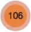

How to Use the Map
*Click on a neighborhood to zoom in to its boundaries.
*Hover over a FEMA Damage Assessment "damaged buildings cluster"  to reveal its boundaries.
*Click on a "damaged buildings cluster" to zoom in and break down the cluster.
*Press the
*After zooming in or pressing
*Press the
Cypress North demonstrates an example of a neighborhood with a particularly dangerous relationship between flooding and development.
Cypress North
The Cypress North neighborhood (mid-west Houston) demonstrates an example of the dangerous trend of real estate development on flood-prone land. The residents of Cypress have experienced repeated damage to their homes from years of seasonal flooding. Cypress stands out in the scope of this project because it marks an area that has experienced a high influx of new residents since 2000 and will experience significant real estate development by 2045, despite the increasing risk that these properties will be flooded. After selecting the neighborhood, press the  button or zoom in to see population growth and future development.
button or zoom in to see population growth and future development.
Click Here to learn more about this project